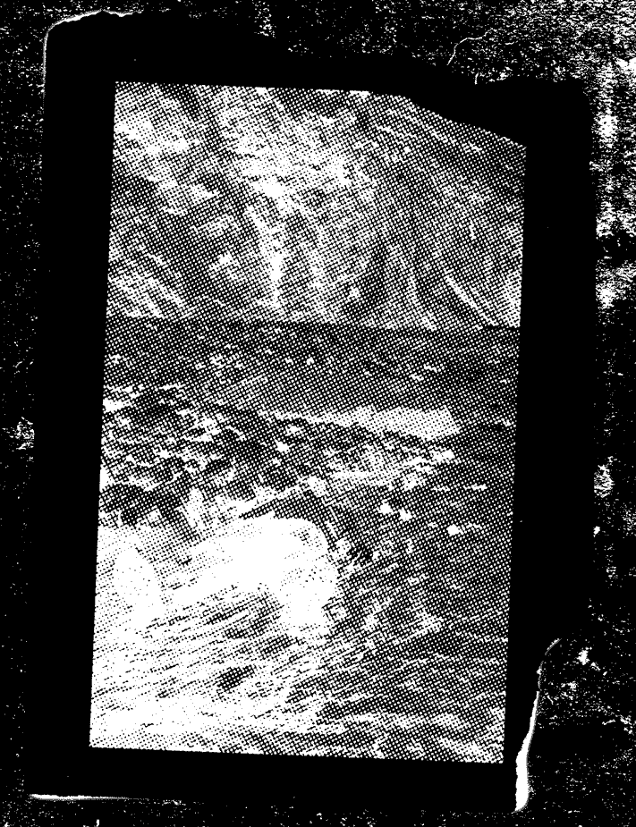
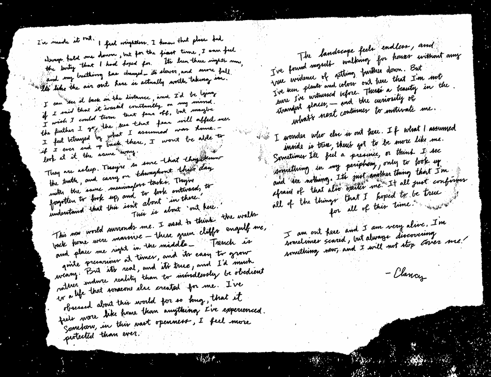

019 01MOON 22
tradução:
Não consigo encarar essa folha por tanto
tempo pra escrever o que eu realmente
estou sentindo. Eu só consigo trabalhar
com perguntas, perguntas que eu
suponho ser verdade, perguntas sobre o
que meu próprio caminho realmente é, e a
pergunta que me assombra todas as
noites e que me deixa preso aqui, mais
uma vez nessa cidade: eu desisti?
A força que vi entre ele e seu bispo
pareceu tensa e assustadora pra mim.
Mas a lembrança dessa troca deu tempo
pra ver e rever na minha mente, já faz
tanto tempo que eu nem sei se me lembro
corretamente. Eu supus que o bispo foi
forçado á recuperar seu sujeito, mas
agora eu me pergunto se o bispo estava
tentando salvar ele, e ele recusou.
Eu fiquei aqui fora por cinco dias depois
de ver isso acontecer, eu não vi ele desde
então. Talvez ele tenha fugido e ainda
estava em Trench comigo. Talvez o bispo
perseguiu ele e o levou pra casa.
Casa?
Eu acabei de chamar esse lugar de
"casa"?
Depois de toda a beleza que eu vi lá fora,
agora estou convencido que eu estou
melhor dentro desses confins?
Eu admito, foi mais difícil que eu imaginei.
Nada poderia presumir o quanto o
'desconhecido' pode me consumir.
Grandes paisagens e infinitas possibilidades,
misturadas com perigo intenso. Eu fiquei
ansioso, eu fiquei entediado, eu fiquei com
fome. Cada passo que eu dava ficava mais
difícil que o anterior, pulando de pedra em
pedra ou indo para florestas escuras - tudo
isso virou desgastante, e eu tinha certeza
que eu não conseguiria mais continuar.
Keons se aproximou no sol rosado uma
manhã. Eu não estava assustado, eu
estava aliviado. Depois de tudo que ele
me ensinou, a presença dele era a coisa
mais confortante que eu tive em dias, e
eu não poderia fazer nada além de ficar
feliz em ver ele. Bem no estilo Keons, ele
enrolou seus braços ao meu redor, então
colocou as mãos em no meu rosto, olhou
bem no fundo dos meus olhos e disse
"Clancy, vamos pra casa".
Eu já to aqui faz algumas semanas, e
enquanto as rotinas desse mundo forem
confortaveis, e certamente mais fácil do
que a vida lá fora, minha mente
continuará pulando entre os dois lugares.
Qual deles é casa? Os bispos estão me
protegendo, e as tochas em cima das
colinas são perigosas? Ou é o contrário?
Meus sonhos me levam de mundo pra mundo
e eu me sinto perdido entre tudo isso.
Ainda tem tanta coisa que eu não entendo.
-Clancy
018 07MOON 18
tradução:
Eu não consigo acreditar no que acabei
de ver. Ainda estou tentando entender.
Esse tempo todo eu tinha certeza que eu
tava completamente sozinho - uma única
alma nesse grande mundo desconhecido.
Mas a alguns dias nessa caminhada, eu
olhei para baixo para ver uma pessoa da
mesma maneira que eu era. Eu me enfiei
nessas cavernas e fendas, tentando ficar
escondido, mas ele estava lá fora em
campo aberto, fazendo sua longa
caminhada bem no meio de Trench. Eu
estava curioso o suficiente pra seguir ele.
Parecia que ele não era afetado pelo
medo do desconhecido - o medo que me
assombra. Pra ele, o terreno parecia
familiar, como se ele ja esteve aqui fora
antes.
Enquanto eu tava perdido na minha
curiosidade, eles apareceram.
Eu ouvi sobre eles em Dema, mas até
onde eu saiba, as histórias eram apenas
um mito.
Dez, vinte, e então o que parecia ser
centenas de Banditos apareceram no
topo das montanhas, todos olhando pra
ele. Ele só parou por um segundo pra
olhar pra eles, e então continuou seu
caminho. A energia dele mudou, e eu não
tinha certeza se ele tava assustado ou
encorajado pela presença sinistra deles.
Eles alertaram ele do que estava por vir.
Tudo era confuso. Primeiro ver ele, depois
os Banditos, pra só agora eu abrir meus
olhos pra um Bispo que se aproximava na
distância.
Ele parou e esperou. Quando o Bispo
parou, eu tinha certeza que ele olhou pra
frente, diretamente pra mim, então eu me
escondi - bem no fundo de uma caverna.
A presença do Bispo parecia paralisar o
cara. Ele ficou parado enquanto o Bispo
se aproximava, sem forças enquanto a
mão estendida manchava seu pescoço.
Eu nunca vi um Bispo possuir uma força
como essa. Keans sempre pareceu gentil
- esse Bispo, pelomenos lá fora, pareceu
algo mais.
Então eu corri, e eu fiquei correndo o
máximo que minhas pernas e meus
pulmões aguentavam. Talvez essa carta
vai ser a prova que o que eu testemunhei
não era um sonho. Um milhão de
perguntas correm pela minha mente. Eu
não sou o único andando por Trench?
Eu vou ir um pouco mais longe, e talvez
eu possa descansar hoje a noite. Talvez
eu tenha feito um erro saindo. Esse canto,
entre dois lugares, está começando a
parecer um abismo sem esperanças nem
fundo. Pelomenos Dema é um lugar que
eu conheço, e em tempos como esse, eu
sinto muita falta do que eu sei. Isso tudo
vai ser mais difícil do que eu imaginei.
Nada aqui fora é familiar. Eu testemunhei
a presença de outros pela primeira vez
hoje, e eu me sinto mais sozinho do que
nunca. Me proteja. (Cover me.)
-Clancy
018 07MOON 08

018 07MOON 08

Tradução:
Eu fiz isso.
Eu me sinto leve. Eu sei que aquele lugar
sempre me prendeu, mas pela primeira
vez, eu consigo sentir a liberdade que eu
esperava. Fazem três noites agora, e
minha respiração mudou - tá mais
devagar e forte. Como se o ar aqui fora
fosse mais agradável. Eu consigo ver isso
na distância, e eu estaria mentindo se eu
dissesse que isso não está constantemente
na minha mente. Eu queria que eu pudesse
desligar esse medo, mas talvez quanto mais
longe eu for, menos esse medo vai me afetar.
Eu me sinto traído pelo que eu assumi ser
casa. - Se algum dia eu voltar lá, eu nunca
vou conseguir ver isso do mesmo jeito.
Eles estão dormindo, eles têm certeza
que eles sabem a verdade, e a levam pelo
dia com as mesmas tarefas sem
importância. Eles se esqueceram de
empacotar, e de parecer ocupados, de
entender que isso não é sobre 'lá dentro'.
Isso é sobre 'aqui fora'.
Esse novo mundo me cerca. Eu
costumava pensar que as paredes ao
redor de casa eram grandes - esses
penhascos verdes me envolvem, e me
colocam bem no meio. - Trench é bem
perigoso as vezes, e é fácil de ficar
cansado. Mas é real, e é verdade, e eu
preferiria encarar a realidade do que
obedecer uma vida que alguém criou pra
mim.
Eu fiquei obcecado por esse mundo por
tanto tempo, que ele parece ser mais
abrigo do que outra coisa que eu
experimentei. De algum jeito, nesse
grande campo aberto, eu me sinto mais
protegido que nunca.
A paisagem parece ser infinita, e eu me
encontrei andando por horas sem
nenhuma evidência de estar indo mais
longe. Mas eu vi plantas e cores aqui fora
que eu não tenho certeza se já vi antes.
Tem beleza nos lugares mais estranhos, -
e a curiosidade de o que vem depois
continua me motivando.
Eu me pergunto quem mais tá aqui fora.
Se o que eu supus lá dentro é verdade,
deve ter mais como eu. As vezes eu vou
sentir uma presença, ou pensar que eu vi
alguma coisa nos arredores, apenas pra
perceber que eu não vi nada. É só uma
coisa que eu tenho medo que também me
anima. Isso tudo confirma todas as
coisas que eu acreditei ser verdade por
todo esse tempo.
Eu estou aqui fora e estou bem vivo. As
vezes eu fico assustado, mas sempre
descobrindo algo novo, e eu não vou
parar. Me proteja! (Cover me!)
-Clancy
018 07MOON 06

018 07MOON 05
tradução:
Eles estão dormindo. A noite demorou
uma eternidade pra aparecer, e agora nós
estamos quase prontos. Nós estudamos
os vigias e sabemos que não tem
nenhuma chance de que a gente consiga
entrar sem ser notado. Então, ao invés de
tentar se esconder, nós vamos ter certeza
que cada um de nós estão notados. Faz
um ano desde a última reunião, e na
Reunião Anual de Glorificados amanhã vai
ser o maior espetáculo que esse caixão
de concreto de uma cidade viu o ano
todo. Se a gente for no tempo certo, nós
vamos desviar a atenção dos vigias e
finalmente entrar. Nós não tivemos
contato, mas nós estamos esperando que
o outro lado vai conseguir achar uma
maneira de entrar. Nós não sabemos
onde vamos nos encontrar, mas estamos
arriscando ser manchados em ordem pra
encontrar-lo. Nós sabemos que nós
devemos ir devagar, e esperar pelas
tochas. Eles nunca viram algo como isso,
e quando amanhecer, tudo vai ser
diferente. Eu estou aterrorizado e
animado, tudo ao mesmo tempo, Eles não
nos controlam.
-Clancy
018 07MOON 05
018 07MOON 01
tradução:
Uma luz sem vida nos envolve toda noite,
eu nunca imaginei que algo tão brilhante
poderia ser tão escuro. É esse brilho que
nos lembra da existência sem sonhos que
nós fomos condenados a viver. Mas o que
eu chamo de condenação, outros aceitam
como normalidade. Como eles
erradicaram tão bem os sonhos dentro de nós?
quando os bispos instituíram Vialismo como
mandato, eles efetivamente quebraram a
esperança que muitos aqui tinham.
Eu sou o único que percebe que eles
mentiram pra nós? Eu sou o único que
tem noção que os nove sequestraram
nossa confiança, e extinguiram a
esperança que uma vez motivou nossa
existência? Nós costumavamos fechar
nossos olhos e imaginar uma vida melhor,
agora essa cidade tá cheia de olhos
mortos pegos em um transe de
obediência, sem qualquer traço de
identidade. A única luz significante que eu
vi estavam nos olhos daqueles
manchados - uma visão curiosa, ver olhos
brilhantes estrangulados pelas mãos
sombrias dos Bispos. Enquanto o castigo
deles desaparecem, também desaparece
a memória de algo mais. Minha
esperança de algo mais é tudo que eu
tenho nesse túmulo rígido, e eu não vou
deixa-la morrer.
-Clancy
018 07MOON 01

017 07MOON 17
__n_ot_myo_nly_fri_en d
017 07MOON 16
017 07MOON 07
Tradução:
Se referir a Dema como minha casa
nunca me pareceu certo. Dema, pra mim,
simplesmente foi o lugar em que eu existi,
ou, o 'lugar' que eles me colocaram. Eu
ouvi histórias sobre a ideia de "casa"
, e
sua descrição sempre pareceu
confortável. Tinha uma romântica propriedade
do lugar que eles se habitaram que eu admirei,
mas eu nunca conseguiria me relacionar. Esse
lugar, meu lugar, parece não ter nada das
maravilhas e do romance que as antigas
histórias contam. Mas em algum lugar
entre a ordem de ferro e a infalível
precisão de Dema, existe um pouquinho
de bondade. É nessa bondade escondida
que minha mente se perde. Essa
esperança de descoberta criou uma nova
versão de mim; Uma versão melhor, eu
espero, que vai encontrar um jeito de
experienciar o que tá atrás dessas
paredes colossais.
-Clancy
017 02MOON 12
013 01MOON 08

sev_ering__tiez
gEt out. the compAss lies. they don't
control you. get out. the compaSs lies.
They don't control you. get out. the
compass lIeS. they don't control yoU.get
out. the comPass lies. they don't control
you.
011 07MOON 08
009 12MOON 29
d_e_ath__eat_E_rz
988 12MOON 01
tradução:
IDENTIFICADO COMO
FALHA NA FUGA DO PERÍMETRO
PELO CONSELHO DE DEMA
VIOLAÇÃO DA SEÇÃO
15398642 14
DE CÓDIGO DE CONDUTA DO VIALISTA
988 06MOON 18
tradução:
DIÁRIO DO_ CLANCY
As Perplexidades do horizonte de Dema
não me surgiram até meu nono ano. Isso
foi quando eu comecei a contemplar o
existencial, e decidir que tipo de
impressão eu queria que minha vida
fizesse. Naturalmente, pra alimentar
minha esperança, eu olhei a terra que me
cultivou á distância, apenas agora com
uma nova consciência do obstáculo que
minha jovem ignorância me fez ignorar.
Estava alí esse tempo todo? Como eu não
vi algo tão óbvio? Eu sou lembrado do
momento diariamente, como a
idealização diretamente colide com uma
única esperança pro meu próprio futuro.
Como uma criança, eu olhei pra Dema
com admiração, hoje, eu sou moldado
com frustração, como eu gasto cada dia
esperando por um vislumbre do topo da
parede que nos deixou aqui. Foi no nono
ano que eu aprendi que Dema não era
minha casa. Essa vila, depois de todo
esse tempo, era minha armadilha.
Antes de perceber, eu tinha grande
afeição por Dema. Tinha uma estrutura
milagrosa pra cidade que colocou minhas
preocupações pra dormir. Ruas e locais
eram seguros, e as responsabilidades do
dia eram feitas com mínimos esforços.
Quando uma lição era ensinada e entendida,
nós confiavamos na nossa habilidade de
completar nossas obrigações a tempo, e se
sentiamos seguros em saber que as obrigações
de amanhã seriam feitas com a mesma eficiência.
Nos todos trabalhamos pra representar nossos
Bispos com honra, e sabiamos que cada habitante
da nossa região tinha uma dedicação igual a
consistência.
Keons encorporava o espírito dessa
dedicação. Dos nove Bispos de Dema,
Keons era reverenciado como inabalável e
franco, possuindo a abilidade de
conquistar foco que era raro pra maioria
na nossa região. Todos nós admiravamos
ele, e se sentiamos honrados de ser
habitantes dessa região. Enquanto nós
ouvimos lendas da implacável legião dos
outros bispos, Keons possuiu um
comportamento diferente de qualquer um
que eu já conheci, e todos nós estavamos
orgulhosos de servir.
-Clancy